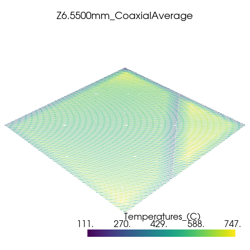
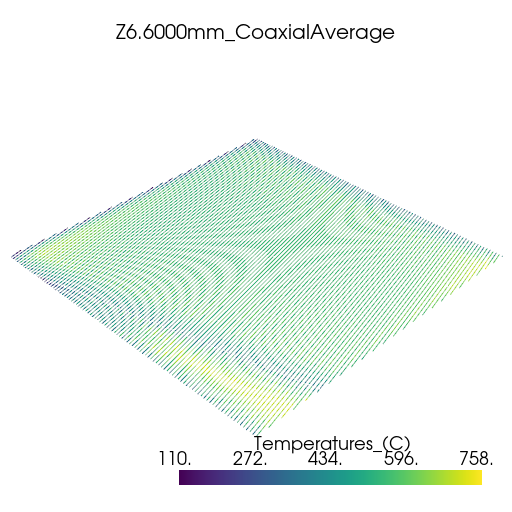
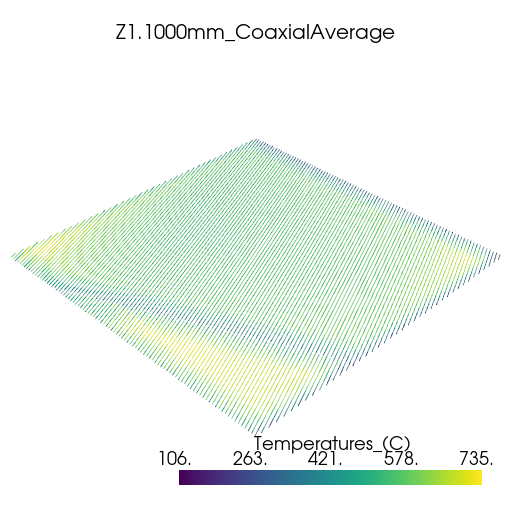
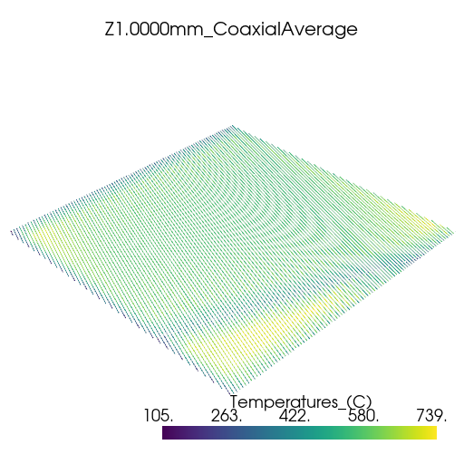
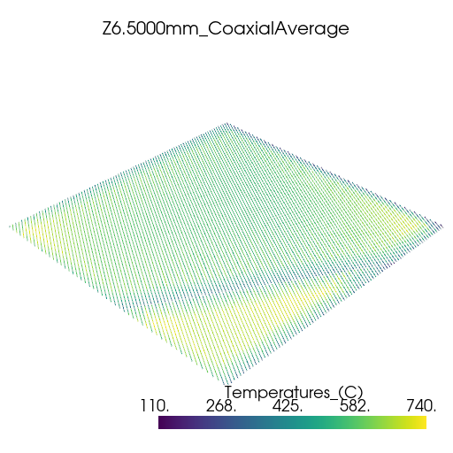

Note
Go to the end to download the full example code
Thermal history analysis#
This example shows how you can use PyAdditive to determine thermal history during a build using a simulated coaxial average sensor.
Units are SI (m, kg, s, K) unless otherwise noted.
Perform required import and connect#
Perform the required import and connect to the Additive service.
from ansys.additive.core import (
Additive,
AdditiveMachine,
BuildFile,
CoaxialAverageSensorInputs,
MachineType,
Range,
SimulationError,
StlFile,
ThermalHistoryInput,
)
additive = Additive()
user data path: /home/runner/.local/share/pyadditive
Specify model#
Specify the geometry model. PyAdditive supports two types of geometry
specifications, the StlFile class and the BuildFile class.
You can download the example build and STL files by importing the
examples module.
import ansys.additive.core.examples as examples
# Create an ``StlFile`` object.
stl_name = examples.download_10mm_cube()
stl_file = StlFile(stl_name)
# Or, create a ``BuildFile`` object.
build_file_name = examples.download_small_wedge_slm_build_file()
build_file = BuildFile(MachineType.SLM, build_file_name)
Select material#
Select a material. You can use the materials_list() method to
obtain a list of available materials.
print("Available material names: {}".format(additive.materials_list()))
Available material names: ['Ti64', 'IN718', '17-4PH', 'IN625', '316L', 'AlSi10Mg', 'CoCr', 'Al357']
You can obtain the parameters for a single material by passing a name
from the materials list to the material() method.
material = additive.material("17-4PH")
Specify machine parameters#
Specify machine parameters by first creating an AdditiveMachine object
and then assigning the desired values. All values are in SI units (m, kg, s, K)
unless otherwise noted.
machine = AdditiveMachine()
# Show available parameters
print(machine)
AdditiveMachine
laser_power: 195 W
scan_speed: 1.0 m/s
heater_temperature: 80 °C
layer_thickness: 5e-05 m
beam_diameter: 0.0001 m
starting_layer_angle: 57 °
layer_rotation_angle: 67 °
hatch_spacing: 0.0001 m
slicing_stripe_width: 0.01 m
Set laser power and scan speed#
Set the laser power and scan speed.
machine.scan_speed = 1 # m/s
machine.laser_power = 500 # W
Specify inputs for thermal history simulation#
Thermal history is simulated for the given geometry over a range of heights
in the Z dimension. More than one range can be specified. Each range is specified
with a Range object. The ranges are assigned to a CoaxialAverageSensorInputs
object, which also includes a sensor radius. The CoaxialAverageSensorInputs object
is assigned to a ThermalHistoryInput object.
# Values are in meters
sensor_inputs = CoaxialAverageSensorInputs(
radius=5e-4,
z_heights=[Range(min=1e-3, max=1.1e-3), Range(min=6.5e-3, max=6.6e-3)],
)
input = ThermalHistoryInput(
machine=machine,
material=material,
id="thermal-history-example",
geometry=stl_file,
coax_ave_sensor_inputs=sensor_inputs,
)
Run simulation#
Use the simulate() method of the additive object to run the simulation.
The returned object is either a ThermalHistorySummary object or a
SimulationError object.
summary = additive.simulate(input)
if isinstance(summary, SimulationError):
raise Exception(summary.message)
Single input
Plot thermal history#
Plot the thermal history using PyVista.
import glob
import os
import pyvista as pv
vtk_files = glob.glob(os.path.join(summary.coax_ave_output_folder, "*.vtk"))
for file in vtk_files:
plotter = pv.Plotter(window_size=[512, 512])
plotter.add_mesh(pv.read(file))
title = os.path.splitext(os.path.basename(file))[0]
plotter.add_title(title, font_size=8)
plotter.show()
- 
- 
- 

- 
- 
Total running time of the script: (3 minutes 5.026 seconds)